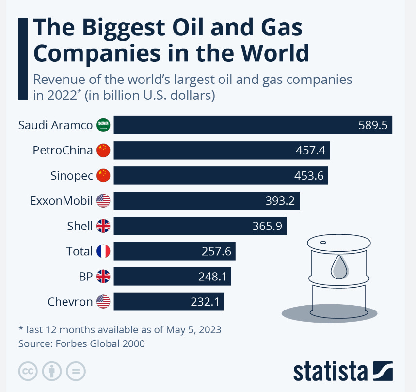
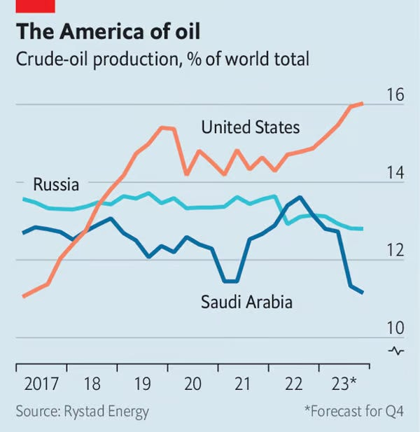

3 Oil and Gas Industry
3.1 Facing Contraction to Net Zero
Tooze
The oil and gas industry’s talk of a green future, is mainly propaganda.
The balance of new energy investment has shifted decisively from fossil fuel to new energy sources. It is just that other corporate players and government policies are driving it, outside the fossil fuel sector.
Either the oil and gas industry is silently gambling that the energy transition will not happen, that we remain in the so-called STEPS scenario, which spells disaster for the planet. Or, if one assumes that current trends continue and politics and other non-fossil business interests are now driving an inexorable energy transition, then one can hardly avoid the conclusion that the titans of the oil and gas sector are burying their heads in the sand. It is not the green energy advocates but the fossil fuel holdouts who are losing their grip on reality.
Demand for oil and gas is going to plunge and the industry is not adjusting to that simple fact.
The industry is vast, employing 12 million people and generating free revenue of roughly $3.5 trillion, which is split between government taxation (50%), reinvestment (40%) and dividends (10%). In the West, notably in the US and Europe, we tend to think of the energy industry as consisting of “oil majors”. Giant private corporations like Exxon. But that is an outdated view, today the 7 global oil majors “hold less than 13% of global oil and gas production and reserves. National oil Companies (NOCs) account for more than half of global production and close to 60% of the world’s oil and gas reserves.”
The largest share of investment in the industry is accounted for not by the majors or the national oil companies, but by so-called independents.
Oil and gas producers account for only 1% of total clean energy investment globally. More than 60% of this comes from just four companies, out of thousands of producers of oil and gas around the world today. For the moment the oil and gas industry as a whole is a marginal force in the world’s transition to a clean energy system.
As the IEA comments, if “expectations are that demand and prices follow a scenario based on today’s policy settings, that would value today’s private oil and gas companies at around USD 6 trillion. If all national energy and climate goals are reached, this value is lower by 25%, and by 60% if the world gets on track to limit global warming to 1.5 °C.” Due to their much larger reserves, the losses of the National Oil Companies will be proportionally heavier.
What drives these losses is falling demand and falling prices. In the IEA’s net zero scenario, the oil prices falls to 42 dollars per barrel by 2030 and 25 dollars by 2050, at which point most of the industry is making heavy losses.
The return on capital employed in the oil and gas industry averaged around 6-9% between 2010 and 2022, whereas it was 6% for clean energy projects. The industry’s ongoing investment of hundreds of billions in fossil energy thus exposes its stakeholders to considerable risks for only modest immediate advantage in terms of secure return.
To bridge the “cognitive gap”, oil and gas managers help themselves with various more or less escapist arguments.
One common argument is that some new investment in fossil fuels is necessary to offset the natural decline in production from exhausted oil and gas fields and to ensure continuity of supply. But as the IEA calculates by 2030 the total annual new investment required is $400 billion, half the current level, and what is certainly not needed is further investment in the discovery of new fields, which is still proceeding apace.
The bottom line is that by 2050 in a 1.5 °C scenario, global oil consumption will be 24 million barrels per day, which is roughly one quarter the current level. Most of this will be used in petrochemicals rather than in combustion. There will also be demand for 920 billion cubic metres of natural gas, roughly half of which will be used for hydrogen production. Rather than seeing this as a clear signal of the need to prepare for dramatic contraction, “Many producers say they will be the ones to keep producing throughout transitions and beyond.” But as the IEA points out: They cannot all be right. Not all producers can be the last ones standing. What will determine the balance of future supply will be first and foremost costs and this dramatically favors the lowest cost producers in the Middle East. Middle East energy is not only cheaper it is also cleaner to produce.
IEA’s net zero trajectory foresees a 80 percent contraction in US and Eurasian oil production, compared to a 50-60 percent fall in the Middle East.
The same uneven contraction will likely play out in the global gas industry with the over-expanded North American industry suffering a huge reduction. There will be very considerable excess capacity in LNG at the latest by the mid 2030s.
The projects that will hurt the most are the rash of recently announced new LNG capacity, notably in Africa. Their cost base is well above the prices that the IEA expects for LNG by the 2030s.
Low-income high-cost producers like Mozambique in gas or Angola and Nigeria in oil, have a future as major fossil fuel producers, only if they are accorded special preference in the process of contraction. The case against developing the gas projects currently under discussion in Africa is not principally to do with their climate impact. If they were all put fully into production, the IEA estimates that they would raise Africa’s share of cumulative emissions from 3 % of the historic total to 3.5%. The case against these projects is that against the backdrop of the global exit from fossil fuels they are uneconomic and will become a significant burden for the national governments that back them.
CCS
The fossil fuel industry should not comfort itself with, according to the IEA, is the idea that gigantic carbon capture will permit a continuation or even expansion of the current industry.
Tooze (2023) Carbon Notes 7 - The IEA’s message to the oil and gas industry: wake up!
3.2 Net Zero Regional Changes Ahead
Tooze
Investments
The owners and managers of the fossil fuel complex are increasingly anticipating a constrained future. To keep their shareholders happy and their stock market valuations up, they are deleveraging and paying out larger dividends. Investment is flat, but what is not happening so far to any significant degree is a move by the existing oil and gas industry either to cut investment to long-run sustainable levels or to join the energy transition. We are in a situation of suspended animation, or suspended disbelief.
The global oil and gas industry is not dominated by the Western energy majors but is a mixed economy of large global players, smaller independents and various nationally owned energy corporations. The largest of the national oil companies Saudi Aramco dwarfs all the other players. And it was followed in the rankings in 2022 not by ExxonMobil, but by the two Chinese giants, PetroChina and Sinopec.

The national oil companies are also paying large dividends and taxes enabling their governments to fund alternative investment programs.
The Middle Eastern national oil and gas champions are not just flooded with cash. Their business decisions reveal that they are also comparatively optimistic about the future. They are responding to a surge in revenues by increasing investment. By contrast, investment by private oil interests, whether the majors in the US and Europe or the independents, is well down.
Trade
By 2050 both scenarios foresee a significant decline in the global trade. This is driven by the falling imports of the EU, China and India. The one really resilient area of demand foreseen by both scenarios is “Other Asia”, which by 2050 in the NZE case accounts for more than half of total global demand.
Regardless of the scenario, the Middle East is the main source of supply for oil and gas by 2050. In both, Russia is largely squeezed out. The crucial difference between the two scenarios concerns North America and above all the USA as a source of oil and gas exports.
In the net zero transition scenario, as overall trade in oil and gas is slashed by 75 percent and the Middle Eastern share of global trade rises from 40 to 60 percent, the US share remains frozen at 20 percent.
The North American share of global oil and gas markets doubles from 20 to 40 percent. IEA expects US exports of oil, gas, hydrogen etc to remain largely unchanged at roughly 9-10 million barrels per day as far ahead as 2050.
Russia has a poor outlook regardless of the scenario.
On the trajectory suggested by current policies, there is a future for North American exports at something like their current scale. On a net zero path the North Americans, like everyone else, are squeezed to very low levels by Middle East cost advantages.
This then is a measure of the energy policy battlefield of the coming decades. The interest of the US oil and gas interests lies not in stopping the energy transition tout court, but to ensure that it is gradual enough to secure for them a substantial global market, which will valorize investments still being made to the tune of hundreds of billions of dollars. The IEA’s scenario analysis precisely identifies the global scenario for which the US oil giant ExxonMobil and other interests in Texas and the Gulf seem to be preparing themselves.
The US industry is flanking this with substantial investments in various alibi technologies like carbon capture, where the US lead on future projects is large. Much of the impetus for this American surge in fossil-aligned “clean energy” projects, has come from the Inflation Reduction Act passed in 2022, which provides generous subsidies for carbon capture and hydrogen.
Betting on an Incomplete Transition
The green wing of the Biden administration justifies this as a political necessity. But there are more than short-term factors in play. American policy talks a good game on the global energy transition but American business interests and policy-makers like their new role as a major energy exporter. Policy-making at all levels clings to the idea that the US will be a major energy provider for the world economy. It is not focused on preparing US energy interests for a future in which their energy exports are slashed to half their current level by 2040 and a quarter by 2050. To this extent, to the extent that they project energy exports at anything like the current level into the medium-term, they are effectively betting on an incomplete transition.
The suspended animation that the IEA sees in the oil and gas investment figures reflects this undecided status quo. Continued investment in the Middle East energy complex, which has a future under any scenario, sits side by side with stagnation, but not full retreat in the private, North America-centered, oil and gas business.
Not Mid-Transition, Mid-Climate-Disaster
The risk is that as this situation persists and the investments in the status quo pile up, even if at a slower pace, it opens the door to reactionary forces and questioning of the underlying trajectory of transition. In the limit the direction of travel itself is put in question. Meanwhile, the carbon budget runs down at an even more alarming pace. We thus find ourselves not in mid-transition, but in mid climate disaster.
3.3 Swing Producers
Smith
Traditionally, people thought that Saudi Arabia was the world’s crucial “swing producer” of oil. The basic idea was that even though Saudi was far from a monopolist in the global oil market, they were the only producer who could increase or decrease production by huge amounts in a very short time frame. And so it was thought that the Saudis could basically control global oil prices, both because global demand is inelastic (meaning that modest swings in production can change prices a lot) and because the other OPEC countries would follow the Saudis’ lead.
But in recent years, another key swing producer has emerged: the United States. Since around 2010, the biggest swing by far has been the rise of U.S. shale oil production. And even as the Saudis have slashed production in 2023, the U.S. has raised its own oil output by almost as much.

The U.S. is winning the tug-of-war. Saudi has cut production, but prices have gone down anyway. The combination of fewer barrels sold and fewer dollars per barrel is dealing a crushing blow to the Saudi economy. The country is now in a recession, with GDP shrinking at a stupendous 4.5% annualized rate in the third quarter.
The Saudis are in big trouble. Their ability to push oil prices around like a monopolist is gone, so cutting production simply impoverishes them. That’s bad news for a country that has seen zero GDP growth in 30 years.